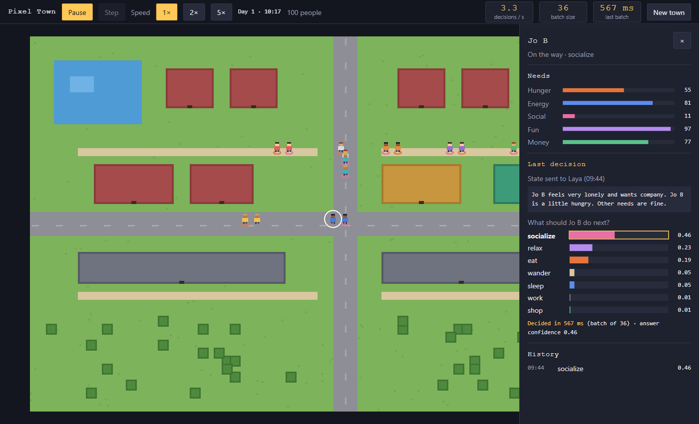
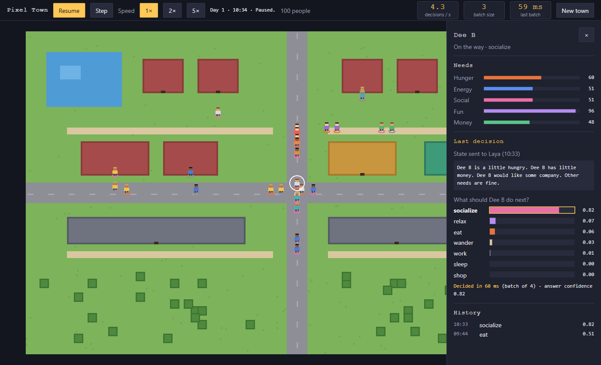

A Laya showcase
A hundred tiny lives.
Every decision made by Laya.
A pixel town where people eat, sleep, work, meet friends and wander. Nobody scripted them. Each choice is a real answer from Laya, an open-source decision engine. Click anyone to see exactly why they chose what they did.
- about
- 70 ms
- per warm batch on a laptop GPU
- up to
- 64
- people decided in one call
- exactly
- 0
- scripted or faked answers

Watching is the product
There is no player, no score and nothing to win. You are an observer, a little like a god looking at an ant farm. You can pause time, step forward one decision at a time, speed the day up, and open any person to look inside their head.
The point is to see decision-making happen: dozens of people choosing at once, each choice backed by real probabilities and a real latency in milliseconds.
- Five needs per person: hunger, energy, social, fun and money.
- Seven activities to choose from: sleep, eat, work, socialize, relax, shop, wander.
- Day and night. At night the town goes to bed on its own, because tired people choose sleep.
- Live numbers in the top bar: decisions per second, batch size, batch time.

The inspector
Every decision, explained
Click a person and the inspector opens. Nothing is hidden:
- their needs, live
- the exact sentence the app sent to Laya
- Laya's probability for each of the seven options
- which option won, and how long the call took
- their last ten decisions
→ work 0.96
How it works
From need to footsteps in four steps
-
1
Needs drift
A Java simulation runs the town. Hunger rises, energy falls, money runs out. Activities restore what they fix.
-
2
One sentence each
Everyone due for a decision becomes one short sentence that names their strongest needs, in plain words.
-
3
One batch call
Up to 64 sentences go to Laya's batch endpoint at once. Laya answers each with a choice and a probability per option.
-
4
They walk
Each person walks to the right place: home, work, the restaurant, the shop or the park. Your browser draws it at ten updates per second.
POST /v1/systemone/batch { "states": ["Maya is starving. Other needs are fine.", "…"], "questions": { "next": { "type": "choice", "instructions": "Choose what this person most needs to do right now.", "criteria": { "sleep": "…", "eat": "…", "work": "…", … } }} }
Speed
Real numbers, from a laptop
Measured with an RTX 3060 laptop GPU (6 GB) and Laya's English checkpoint. 64 people decided in a single call:
faster per batch on the GPU than on the CPU.
for a small warm batch, which is what the running town mostly sends.
The app measures every call. If Laya is slow, you see it. If Laya is down, people just carry on.
Lessons
What we learned about talking to Laya
Laya is a fast classifier, not a chatbot. The words you send decide a lot.
Don't say what they're doing
With “Right now Maya is relaxing” in the text, Laya chose relax for all 100 people, at 0.99. Mentioning the current activity anchors the answer.
Needs first, plainly
“Maya is starving. Other needs are fine.” Strongest need first, everyday words. This scored best in our checks.
Time only at night
Daytime phrases pulled answers toward relax. Saying “It is the middle of the night” is still useful: tired people go to bed.
Run it
One command
You need Docker. With an NVIDIA GPU:
docker compose up --buildThen open localhost:8765 and press Start. The first run builds Laya from source and downloads its model, so give it a few minutes.
No NVIDIA GPU? It still works, just slower:
docker compose -f compose.yaml -f compose.cpu.yaml up --build